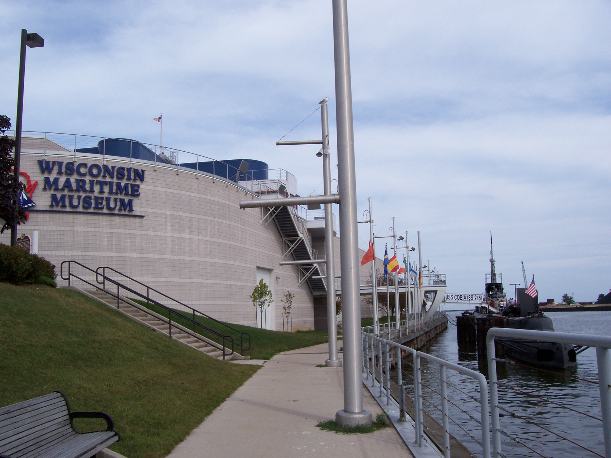

Experience
Campaign Manager
Eric Larsen, Wisconsin State Assembly 91st District | Eau Claire, Wisconsin
February 2018 - Present
- Planning promotional events for the candidate.
- Managing a cohort of volunteers to solicit nomination signatures and canvass potential voters.
- Promoting the candidate's platform and developing meaningful relationships with constituents.
- Utilizing VoteBuilder to identify voters and analyze voter demographics.

Desk Clerk/Tour Guide
Wisconsin Maritime Museum | Manitowoc, Wisconsin
September 2012 - January 2018
- Engaging with the public to ensure a memorable visit to the museum.
- Performing administrative duties including cash handling and answering patron questions.
- Giving tours of the USS Cobia, including supervising overnight tour groups.
- Facilitating opening and closure procedures of the submarine and museum.
- Awarded Tour Guide of the Year in 2015.